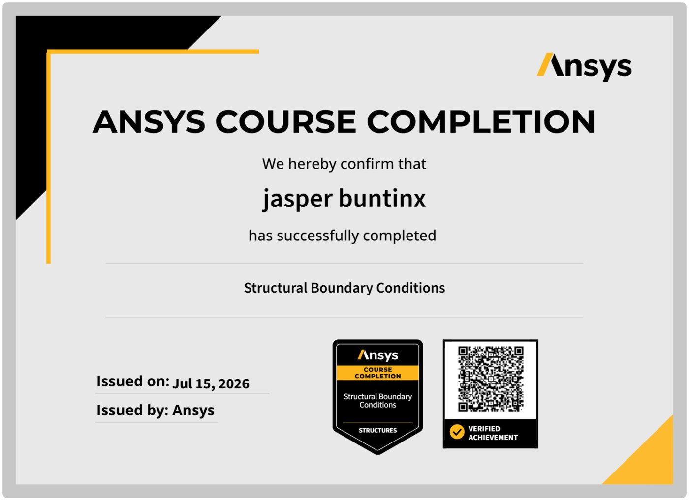
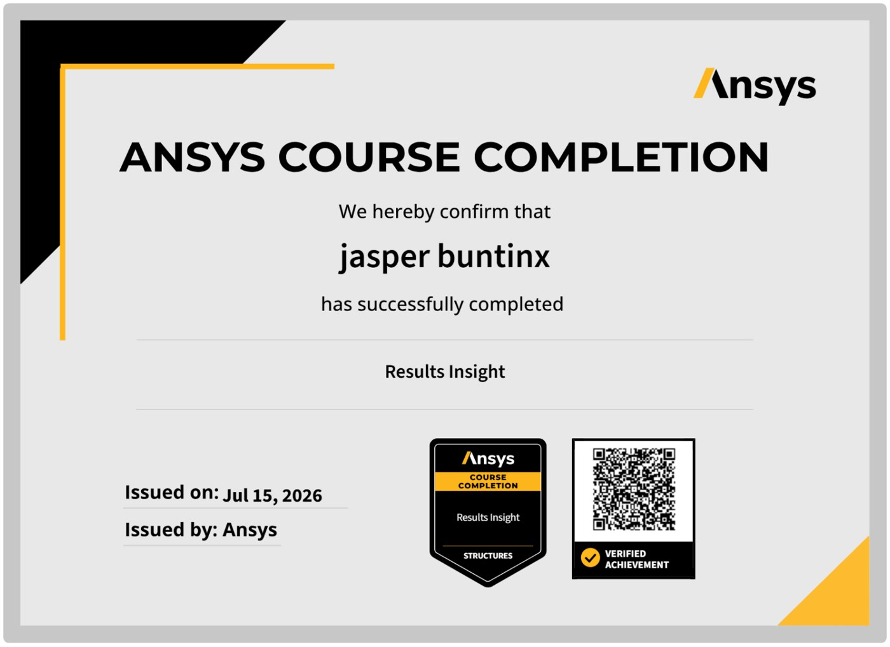

Certifications
Software and engineering credentials. Click any certificate to zoom in.
Ansys Structural Mechanics

Ansys Learning Track
Stress Analysis Using Ansys Mechanical
Completed the full structural-mechanics learning track — six component courses covering geometry, connections, boundary conditions, solver accuracy, and results interpretation in Ansys Mechanical. Click the certificate to zoom in.
Component courses


SolidWorks
CSWA